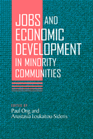

A new agenda for revitalizing minority neighborhoods
A new agenda for revitalizing minority neighborhoods


 A new agenda for revitalizing minority neighborhoods
A new agenda for revitalizing minority neighborhoods

|  |
Jobs and Economic Development in Minority Communitiesedited by Paul Ong and Anastasia Loukaitou-Siderispaper EAN: 978-1-59213-410-6 (ISBN: 1-59213-410-6) |
"This collection is both timely and important.... The variety of cities and ethnic/racial communities discussed in these readings suggests that the inherent pragmatics of effective community development demand a sensitivity to place and cultural context that is too often missing in the field."
—David Bartelt, Geography and Urban Studies, Temple University
Over the past four decades, the forces of economic restructuring, globalization, and suburbanization, coupled with changes in social policies have dimmed hopes for revitalizing minority neighborhoods in the U.S. Community economic development offers a possible way to improve economic and employment opportunities in minority communities. In this authoritative collection of original essays, contributors evaluate current programs and their prospects for future success.
Using case studies that consider communities of African-Americans, Latinos, Asian immigrants, and Native Americans, the book is organized around four broad topics. "The Context" explores the larger demographic, economic, social, and physical forces at work in the marginalization of minority communities. "Labor Market Development" discusses the factors that shape supply and demand and examines policies and strategies for workforce development. "Business Development" focuses on opportunities and obstacles for minority-owned businesses. "Complementary Strategies" probes the connections between varied economic development strategies, including the necessity of affordable housing and social services.
Taken together, these essays offer a comprehensive primer for students as well as an informative overview for professionals.
Excerpt available at www.temple.edu/tempress
"Jobs and Economic Development in Minority Communities is an excellent book. It fills a gap in the urban economics literature and it enriches the academic content of the field of community economic development."
—Cecilia Conrad, Stedman-Sumner Professor of Economics, Pomona College
�Each chapter draws on either case material or quantitative assessments to document the employment and economic dynamics of low-income, minority communities. Many chapters focus on specific minority groups in cities such as Los Angeles, New York, or San Francisco. All are thoughtful and informative. The editors argue that any effective community economic development strategy will have to be multidimensional, and their book appropriately reflects this understanding. Summing Up: Recommended.�
—Choice
"The various authors put development in the context of such issues as sprawl, immigration, and welfare reform. They consider both workforce and business development, and discuss how social networks, social services, and affordable housing might connect."
—Planning
�This book is highly recommended, and its in-depth treatment of the historical and social context of concentrated poverty and policy alternatives would make it particularly useful in a graduate seminar�.The editors have done a remarkable job of putting together a volume in which each chapter seems to build on the examples and policy recommendations of the others. Rather than being an assortment of articles on a theme, the chapters together create a �collective wisdom� of community economic development.�
—Journal of American Ethnic History
"The compendium�s most valuable contribution is its challenge to prevailing assumptions about the regional character of job markets and best practices in workforce and enterprise development�.Practitioners and applied scholars will find useful frameworks for promoting, designing, and implementing holistic, community-based metropolitan economic development plans. The collection�s challenges to status quo thinking about �best practices� translate into reasoned approaches for nongentrifying, nondisplacing, and economically and socially effective economic development."
—Economic Development Quarterly
"[A]n extremely valuable addition to debates focused on stimulating jobs and economic development in minority communities. It importantly -- and quite correctly -- emphasizes the need to sensitize community development activities according to geographical, cultural, and socio-political contexts and the need for interventions to be both cross-cutting and multi-dimensional."
—Town Planning Review
Also available in e-book
Introduction. Jobs and Economic Development in Minority Communities: Realities, Challenges, and Innovation – Paul Ong and Anastasia Loukaitou-Sideris
Part I. The Context
1. Metropolitan Dispersion and Diversity: Implications for Community Economic Development – Evelyn Blumenberg
2. Impacts of the New Social Policy Regime – Douglas Houston and Paul Ong
3. The Regional Nexus: The Promise and Risk of Community-Based Approaches to Metropolitan Equity – Manuel Pastor, Chris Benner, and Martha Matsuoka
Part II. Labor Market Development
4. Workforce Development in Minority Communities – Michael A. Stoll
5. Employment Opportunities Beyond the 'Hood: African American and Hispanic Applicants in Atlanta, Los Angeles, New York, and Philadelphia – Michela M. Zonta
6. Economic Development in Latino Communities: Incorporating Marginal and Immigrant Workers – Abel Valenzuela Jr.
Part III. Business Development
7. The Role of Black-Owned Businesses in Black Community Development – Thomas D. Boston
8. New York City's Asian Immigrant Economies: Community Development Needs and Challenges – Tarry Hum
9. Indian Gaming as Community Economic Development – Ted Jojola and Paul Ong
Part IV. Complementary Strategies
10. Social Networks and Social Capital: Latinos in Pico-Union – Anastasia Loukaitou-Sideris and Judy Hutchinson
11. Linking Housing to Community Economic Development with Community Benefits Agreements: The Case of The Figueroa Corridor Coalition for Economic Justice – Jacqueline Leavitt
12. Synchronizing Social Services with Labor Market Participation: Implications for Community Economic Development in Minority Neighborhoods – Lois M. Takahashi
Conclusion: Lessons for Community Economic Development – Anastasia Loukaitou-Sideris and Paul Ong
Contributors
Index
 | Paul Ong is Director of the Ralph and Goldy Lewis Center for Regional Policy Studies at the University of California, Los Angeles. He is the co-editor of The New Asian Immigration in Los Angeles and Global Restructuring (Temple). |
 | Anastasia Loukaitou-Sideris is Professor and Chair of Urban Planning in the School of Public Affairs at the University of California, Los Angeles. She is co-author of Urban Design Downtown: Poetics and Politics of Form. |
Urban Studies
Political Science and Public Policy
Race and Ethnicity
© 2015 Temple University. All Rights Reserved. This page: http://www.temple.edu/tempress/titles/1807_reg.html.